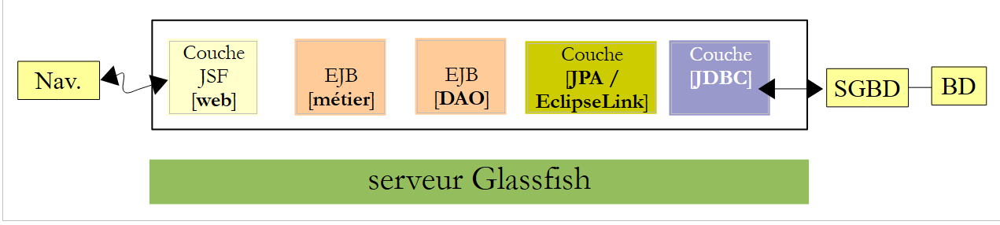
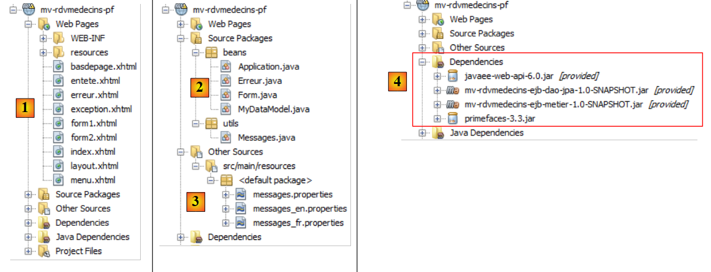
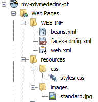
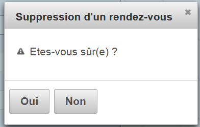
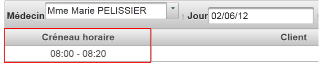
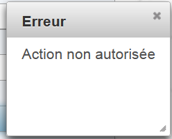
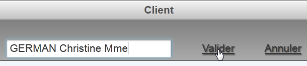
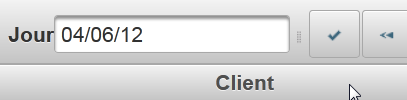
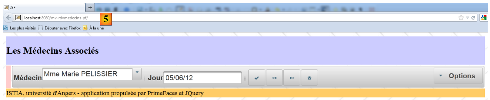

6. Beispielanwendung-03: rdvmedecins-pf-ejb
Zur Erinnerung: Die Struktur der für den Glassfish-Server entwickelten Beispielanwendung:
 |
An dieser Architektur ändern wir nichts, abgesehen von der Webschicht, die hier mithilfe von JSF und PrimeFaces realisiert wird.
 |
6.1. Das NetBeans-Projekt
Oben sind die Schichten [métier] und [DAO] diejenigen aus dem Beispiel 01 JSF / EJB / Glassfish. Wir verwenden sie erneut.
 |
- [mv-rdvmedecins-ejb-dao-jpa]: Projekt EJB der Ebenen [DAO] und [JPA] aus Beispiel 01,
- [mv-rdvmedecins-ejb-metier]: Projekt EJB der Schicht [métier] aus Beispiel 01,
- [mv-rdvmedecins-pf]: Projekt der Ebene [web] / PrimeFaces – neu,
- [mv-rdvmedecins-app-ear]: Unternehmensprojekt zur Bereitstellung der Anwendung auf dem Glassfish-Server – neu.
6.2. Das Unternehmensprojekt
Das Unternehmensprojekt dient ausschließlich der Bereitstellung der drei Module [mv-rdvmedecins-ejb-dao-jpa], [mv-rdvmedecins-ejb-metier] und [mv-rdvmedecins-pf] auf dem GlassFish-Server. Das NetBeans-Projekt lautet wie folgt:
 |
Das Projekt existiert ausschließlich für diese drei Abhängigkeiten [1], die in der Datei [pom.xml] wie folgt definiert sind:
<?xml version="1.0" encoding="UTF-8"?>
<project xmlns="http://maven.apache.org/POM/4.0.0" xmlns:xsi="http://www.w3.org/2001/XMLSchema-instance" xsi:schemaLocation="http://maven.apache.org/POM/4.0.0 http://maven.apache.org/xsd/maven-4.0.0.xsd">
<modelVersion>4.0.0</modelVersion>
<parent>
<artifactId>mv-rdvmedecins-app</artifactId>
<groupId>istia.st</groupId>
<version>1.0-SNAPSHOT</version>
</parent>
<groupId>istia.st</groupId>
<artifactId>mv-rdvmedecins-app-ear</artifactId>
<version>1.0-SNAPSHOT</version>
<packaging>ear</packaging>
<name>mv-rdvmedecins-app-ear</name>
...
<dependencies>
<dependency>
<groupId>${project.groupId}</groupId>
<artifactId>mv-rdvmedecins-ejb-dao-jpa</artifactId>
<version>${project.version}</version>
<type>ejb</type>
</dependency>
<dependency>
<groupId>${project.groupId}</groupId>
<artifactId>mv-rdvmedecins-ejb-metier</artifactId>
<version>${project.version}</version>
<type>ejb</type>
</dependency>
<dependency>
<groupId>${project.groupId}</groupId>
<artifactId>mv-rdvmedecins-pf</artifactId>
<version>${project.version}</version>
<type>war</type>
</dependency>
</dependencies>
</project>
- Zeilen 10–13: das Maven-Artefakt des Unternehmensprojekts,
- Zeilen 18–37: die drei Abhängigkeiten des Projekts. Beachten Sie dabei insbesondere deren Typ (Zeilen 23, 29, 35).
Um die Webanwendung auszuführen, muss dieses Unternehmensprojekt ausgeführt werden.
6.3. Das PrimeFaces-Webprojekt
Das PrimeFaces-Webprojekt lautet wie folgt:
 |
- in [1], die Seiten des Projekts. Die Seite [index.xhtml] ist die einzige Seite des Projekts. Sie enthält drei Fragmente: [form1.xhtml], [form2.xhtml] und [erreur.xhtml]. Die anderen Seiten dienen lediglich der Formatierung.
- In [2] befinden sich die Java-Beans. Die Bean [Application] hat den Geltungsbereich application, die Bean [Form] hat den Geltungsbereich session. Die Klasse [Erreur] kapselt einen Fehler. Die Klasse [MyDataModel] dient als Vorlage für ein <dataTable>-Tag von PrimeFaces,
- in [3] die Meldungsdateien für die Internationalisierung,
- in [4] die Abhängigkeiten. Das Webprojekt hängt vom Projekt EJB der Schicht [DAO] ab, das Projekt EJB aus der Schicht [métier] sowie Primefaces für die Schicht [web].
6.4. Die Projektkonfiguration
Die Projektkonfiguration entspricht derjenigen der Primefaces-Projekte oder des Projekts JSF, die wir bereits behandelt haben. Wir listen die Konfigurationsdateien auf, ohne sie erneut zu erläutern.
 |  |
[web.xml]: Konfiguriert die Webanwendung.
<?xml version="1.0" encoding="UTF-8"?>
<web-app version="3.0" xmlns="http://java.sun.com/xml/ns/javaee" xmlns:xsi="http://www.w3.org/2001/XMLSchema-instance" xsi:schemaLocation="http://java.sun.com/xml/ns/javaee http://java.sun.com/xml/ns/javaee/web-app_3_0.xsd">
<context-param>
<param-name>javax.faces.STATE_SAVING_METHOD</param-name>
<param-value>client</param-value>
</context-param>
<context-param>
<param-name>javax.faces.PROJECT_STAGE</param-name>
<param-value>Production</param-value>
</context-param>
<context-param>
<param-name>javax.faces.FACELETS_SKIP_COMMENTS</param-name>
<param-value>true</param-value>
</context-param>
<servlet>
<servlet-name>Faces Servlet</servlet-name>
<servlet-class>javax.faces.webapp.FacesServlet</servlet-class>
<load-on-startup>1</load-on-startup>
</servlet>
<servlet-mapping>
<servlet-name>Faces Servlet</servlet-name>
<url-pattern>/faces/*</url-pattern>
</servlet-mapping>
<session-config>
<session-timeout>
30
</session-timeout>
</session-config>
<welcome-file-list>
<welcome-file>faces/index.xhtml</welcome-file>
</welcome-file-list>
<error-page>
<error-code>500</error-code>
<location>/faces/exception.xhtml</location>
</error-page>
<error-page>
<exception-type>Exception</exception-type>
<location>/faces/exception.xhtml</location>
</error-page>
</web-app>
In Zeile 30 ist zu beachten, dass die Seite [index.xhtml] die Startseite der Anwendung ist.
[faces-config.xml]: Konfiguriert die Anwendung JSF
<?xml version='1.0' encoding='UTF-8'?>
<!-- =========== FULL CONFIGURATION FILE ================================== -->
<faces-config version="2.0"
xmlns="http://java.sun.com/xml/ns/javaee"
xmlns:xsi="http://www.w3.org/2001/XMLSchema-instance"
xsi:schemaLocation="http://java.sun.com/xml/ns/javaee http://java.sun.com/xml/ns/javaee/web-facesconfig_2_0.xsd">
<application>
<resource-bundle>
<base-name>
messages
</base-name>
<var>msg</var>
</resource-bundle>
<message-bundle>messages</message-bundle>
</application>
</faces-config>
[beans.xml]: leer, aber für die Anmerkung @Named erforderlich
<?xml version="1.0" encoding="UTF-8"?>
<beans xmlns="http://java.sun.com/xml/ns/javaee"
xmlns:xsi="http://www.w3.org/2001/XMLSchema-instance"
xsi:schemaLocation="http://java.sun.com/xml/ns/javaee http://java.sun.com/xml/ns/javaee/beans_1_0.xsd">
</beans>
[styles.css]: das Stylesheet der Anwendung
.col1{
background-color: #ccccff
}
.col2{
background-color: #ffcccc
}
Die PrimeFaces-Bibliothek verfügt über eigene Stylesheets. Das oben genannte Stylesheet wird ausschließlich für die Seite verwendet, die im Falle einer Ausnahme angezeigt werden soll – eine Seite, die nicht von der Anwendung verwaltet wird. In diesem Fall wird die Seite [exception.xhtml] angezeigt.
[messages_fr.properties]: Die Datei mit den Meldungen auf Französisch
# Layout
layout.entete=Les M\u00e9decins Associ\u00e9s
layout.basdepage=ISTIA, universit\u00e9 d'Angers - application propuls\u00e9e par PrimeFaces et JQuery
# Ausnahme
exception.header=L'exception suivante s'est produite
exception.httpCode=Code HTTP de l'erreur
exception.message=Message de l'exception
exception.requestUri=Url demand\u00e9e lors de l'erreur
exception.servletName=Nom de la servlet demand\u00e9e lorsque l'erreur s'est produite
# Formular 1
form1.titre=R\u00e9servations
form1.medecin=M\u00e9decin
form1.jour=Jour
form1.options=Options
form1.francais=Fran\u00e7ais
form1.anglais=Anglais
form1.rafraichir=Rafra\u00eechir
form1.precedent=Jour pr\u00e9c\u00e9dent
form1.suivant=Jour suivant
form1.agenda=Affiche l'agenda du m\u00e9decin choisi pour le jour choisi
form1.today=Aujourd'hui
# Formular 2
form2.titre=Agenda de {0} {1} {2} le {3}
form2.titre_detail=Agenda de {0} {1} {2} le {3}
form2.creneauHoraire=Cr\u00e9neau horaire
form2.client=Client
form2.accueil=Accueil
form2.supprimer=Supprimer
form2.reserver=R\u00e9server
form2.valider=Valider
form2.annuler=Annuler
form2.erreur=Erreur
form2.emtyMessage=Pas de cr\u00e9neaux entr\u00e9s dans la base
form2.suppression.confirmation=Etes-vous s\u00fbr(e) ?
form2.suppression.message=Suppression d'un rendez-vous
form2.supprimer.oui=Oui
form2.supprimer.non=Non
form2.erreurClient=Client [{0}] inconnu
form2.erreurClient_detail=Client {0} inconnu
form2.erreurAction=Action non autoris\u00e9e
form2.erreurAction_detail=Action non autoris\u00e9e
# Fehler
erreur.titre=Une erreur s'est produite.
erreur.exceptions=Cha\u00eene des exceptions
erreur.type=Type de l'exception
erreur.message=Message associ\u00e9
erreur.accueil=Accueil
[messages_en.properties]: die Meldungsdatei auf Englisch
# Layout
layout.entete=Associated Doctors
layout.basdepage=ISTIA, Angers university - Application powered by PrimeFaces and JQuery
# Ausnahme
exception.header=The following exceptions occurred
exception.httpCode=Error HTTP code
exception.message=Exception message
exception.requestUri=Url targeted when error occurred
exception.servletName=Servlet targeted's name when error occurred
# Formular 1
form1.titre=Reservations
form1.medecin=Doctor
form1.jour=Date
form1.options=Options
form1.francais=French
form1.anglais=English
form1.rafraichir=Refresh
form1.precedent=Previous Day
form1.suivant=Next day
form1.agenda=Show the doctor's diary for the chosen doctor and the chosen day
form1.today=Today
# Formular 2
form2.titre={0} {1} {2}'' diary on {3}
form2.titre_detail={0} {1} {2}'' diary on {3}
form2.creneauHoraire=Time Period
form2.client=Client
form2.accueil=Welcome Page
form2.supprimer=Delete
form2.reserver=Reserve
form2.valider=Submit
form2.annuler=Cancel
form2.erreur=Error
form2.emtyMessage=No Time periods in the database
form2.suppression.confirmation=Are-you sure ?
form2.suppression.message=Booking deletion
form2.supprimer.oui=Yes
form2.supprimer.non=No
form2.erreurClient=Unknown Client {0}
form2.erreurClient_detail=Unknown Client [{0}]
form2.erreurAction=Unauthorized action
form2.erreurAction_detail=Action non autoris\u00e9e
# Fehler
erreur.titre=The following exceptions occurred
erreur.exceptions=Exceptions' chain
erreur.type=Exception type
erreur.message=Associated Message
erreur.accueil=Welcome
6.5. Die Seitenvorlage [layout.xhtml]
 |
Die Vorlage [layout.xhtml] lautet wie folgt:
<?xml version='1.0' encoding='UTF-8' ?>
<!DOCTYPE html PUBLIC "-//W3C//DTD XHTML 1.0 Transitional//EN" "http://www.w3.org/TR/xhtml1/DTD/xhtml1-transitional.dtd">
<html xmlns="http://www.w3.org/1999/xhtml"
xmlns:h="http://java.sun.com/jsf/html"
xmlns:p="http://primefaces.org/ui"
xmlns:f="http://java.sun.com/jsf/core"
xmlns:ui="http://java.sun.com/jsf/facelets">
<f:view locale="#{form.locale}">
<h:head>
<title>JSF</title>
<h:outputStylesheet library="css" name="styles.css"/>
</h:head>
<h:body style="background-image: url('#{request.contextPath}/resources/images/standard.jpg');">
<h:form id="formulaire">
<table style="width: 1200px">
<tr>
<td colspan="2" bgcolor="#ccccff">
<ui:include src="entete.xhtml"/>
</td>
</tr>
<tr>
<td style="width: 10px;" bgcolor="#ffcccc">
<ui:include src="menu.xhtml"/>
</td>
<td>
<p:outputPanel id="contenu">
<ui:insert name="contenu">
<h2>Contenu</h2>
</ui:insert>
</p:outputPanel>
</td>
</tr>
<tr bgcolor="#ffcc66">
<td colspan="2">
<ui:include src="basdepage.xhtml"/>
</td>
</tr>
</table>
</h:form>
</h:body>
</f:view>
</html>
Der einzige variable Teil dieser Vorlage ist der Bereich in den Zeilen 28–30. Dieser Bereich befindet sich im Bereich mit der ID „:formulaire:contenu“ (Zeile 27). Das sollten wir uns merken. Die Aufrufe von AJAX, die diesen Bereich aktualisieren, haben das Attribut „update=":formulaire:contenu"“. Außerdem beginnt das Formular in Zeile 15. Das in den Zeilen 28–30 eingefügte Fragment wird also in dieses Formular eingefügt.
Die Darstellung dieser Vorlage sieht wie folgt aus:
 |
Der dynamische Teil der Seite wird in den oben eingerahmten Bereich eingefügt.
6.6. Die Seite [index.xhtml]
 |
Das Projekt zeigt immer dieselbe Seite an, nämlich die folgende Seite [index.xhtml]:
<?xml version='1.0' encoding='UTF-8' ?>
<!DOCTYPE html PUBLIC "-//W3C//DTD XHTML 1.0 Transitional//EN" "http://www.w3.org/TR/xhtml1/DTD/xhtml1-transitional.dtd">
<html xmlns="http://www.w3.org/1999/xhtml"
xmlns:h="http://java.sun.com/jsf/html"
xmlns:p="http://primefaces.org/ui"
xmlns:f="http://java.sun.com/jsf/core"
xmlns:ui="http://java.sun.com/jsf/facelets">
<ui:composition template="layout.xhtml">
<ui:define name="contenu">
<ui:fragment rendered="#{form.form1Rendered}">
<ui:include src="form1.xhtml"/>
</ui:fragment>
<ui:fragment rendered="#{form.form2Rendered}">
<ui:include src="form2.xhtml"/>
</ui:fragment>
<ui:fragment rendered="#{form.erreurRendered}">
<ui:include src="erreur.xhtml"/>
</ui:fragment>
</ui:define>
</ui:composition>
</html>
- Zeilen 8–9: Dieses Fragment XHTML wird in den dynamischen Bereich der Vorlage [layout.xhtml] eingefügt,
- die Seite umfasst drei Unterfragmente:
- [form1.xhtml], Zeilen 10–12;
- [form2.xhtml], Zeilen 13–15;
- [erreur.xhtml], Zeilen 16–18.
Das Vorhandensein dieser Fragmente in [index.xhtml] wird durch Boolesche Werte des der Seite zugeordneten Modells [Form.java] gesteuert. Durch die Anpassung dieser Werte ändert sich somit die Darstellung der Seite.
Das Fragment [form1.xhtml] wird wie folgt dargestellt:
Das Fragment [form2.xhtml] wird wie folgt dargestellt:
 |
Das Fragment [erreur.xhtml] wird wie folgt dargestellt:
 |
6.7. Die Beans des Projekts
 |
Die Klasse des Pakets [utils] wurde bereits vorgestellt: Die Klasse [Messages] ist eine Klasse, die die Internationalisierung der Meldungen einer Anwendung erleichtert. Sie wurde in Abschnitt 2.8.5.7 behandelt.
6.7.1. Die Bean „Application“
Die Bean [Application.java] ist eine Bean mit dem Geltungsbereich application. Wie bereits erwähnt, dient diese Art von Bean dazu, schreibgeschützte Daten zu speichern, die allen Benutzern der Anwendung zur Verfügung stehen. Diese Bean sieht wie folgt aus:
package beans;
import javax.ejb.EJB;
import javax.enterprise.context.ApplicationScoped;
import javax.inject.Named;
import rdvmedecins.metier.service.IMetierLocal;
@Named(value = "application")
@ApplicationScoped
public class Application {
// Geschäftsschicht
@EJB
private IMetierLocal metier;
public Application() {
}
// Getter
public IMetierLocal getMetier() {
return metier;
}
}
- Zeile 8: Wir geben der Bean den Namen „application“,
- Zeile 9: Sie hat den Geltungsbereich „application“,
- Zeilen 13–14: Eine Referenz auf die lokale Schnittstelle der Schicht [métier] wird ihr vom Container EJB des Anwendungsservers injiziert. Erinnern wir uns an die Architektur der Anwendung:
 |
Die Anwendungen JSF, EJB und [Metier] werden in derselben JVM (Java Virtual Machine) ausgeführt. Daher nutzt die Schicht [JSF] die lokale Schnittstelle von EJB. Das ist alles. Die Bean [Application] enthält nichts weiter. Um Zugriff auf die Schicht [métier] zu erhalten, greifen die anderen Beans über diese Bean darauf zu.
6.7.2. Die Bean [Erreur]
Die Klasse [Erreur] sieht wie folgt aus:
- package beans;
public class Erreur {
public Erreur() {
}
// Feld
private String classe;
private String message;
// Konstruktor
public Erreur(String classe, String message){
this.setClasse(classe);
this.message=message;
}
// Getter und Setter
...
}
- Zeile 9: der Name einer Ausnahmeklasse, falls eine Ausnahme ausgelöst wurde,
- Zeile 10: eine Fehlermeldung.
6.7.3. Die Bean [Form]
Ihr Code lautet wie folgt:
package beans;
import java.io.IOException;
...
@Named(value = "form")
@SessionScoped
public class Form implements Serializable {
public Form() {
}
// Anwendungs-Bean
@Inject
private Application application;
// Sitzungs-Cache
private List<Medecin> medecins;
private List<Client> clients;
private Map<Long, Medecin> hMedecins = new HashMap<Long, Medecin>();
private Map<Long, Client> hClients = new HashMap<Long, Client>();
private Map<String, Client> hIdentitesClients = new HashMap<String, Client>();
// Modell
private Long idMedecin;
private Date jour = new Date();
private Boolean form1Rendered = true;
private Boolean form2Rendered = false;
private Boolean erreurRendered = false;
private String form2Titre;
private AgendaMedecinJour agendaMedecinJour;
private Long idCreneauChoisi;
private Medecin medecin;
private Long idClient;
private CreneauMedecinJour creneauChoisi;
private List<Erreur> erreurs;
private Boolean erreur = false;
private String identiteClient;
private String action;
private String msgErreurClient;
private Boolean erreurClient;
private String msgErreurAction;
private Boolean erreurAction;
private String locale = "fr";
@PostConstruct
private void init() {
// Ärzte und Kunden werden zwischengespeichert
try {
medecins = application.getMetier().getAllMedecins();
clients = application.getMetier().getAllClients();
} catch (Throwable th) {
// Der Fehler wird protokolliert
prepareVueErreur(th);
return;
}
// die Wörterbücher
for (Medecin m : medecins) {
hMedecins.put(m.getId(), m);
}
for (Client c : clients) {
hClients.put(c.getId(), c);
hIdentitesClients.put(identite(c), c);
}
}
...
// Ansicht anzeigen
private void setForms(Boolean form1Rendered, Boolean form2Rendered, Boolean erreurRendered) {
this.form1Rendered = form1Rendered;
this.form2Rendered = form2Rendered;
this.erreurRendered = erreurRendered;
}
// Vorbereitung vueErreur
private void prepareVueErreur(Throwable th) {
// Die Fehlerliste wird erstellt
erreurs = new ArrayList<Erreur>();
erreurs.add(new Erreur(th.getClass().getName(), th.getMessage()));
while (th.getCause() != null) {
th = th.getCause();
erreurs.add(new Erreur(th.getClass().getName(), th.getMessage()));
}
// Die Fehleransicht wird angezeigt
setForms(true, false, true);
}
// Getter und Setter
...
}
- Zeilen 6–8: Die Klasse [Form] ist ein Bean mit dem Namen „form“ und dem Gültigkeitsbereich „session“. Es sei daran erinnert, dass die Klasse in diesem Fall serialisierbar sein muss,
- Zeilen 14–15: Die Form-Bean verfügt über eine Referenz auf die Application-Bean. Diese wird vom Servlet-Container, in dem die Anwendung ausgeführt wird, injiziert (Vorhandensein der Annotation @Inject).
- Zeilen 17–44: Die Vorlage für die Seiten [form1.xhtml, form2.xhtml, erreur.xhtml]. Die Anzeige dieser Seiten wird durch die Booleschen Werte in den Zeilen 27–29 gesteuert. Es ist zu beachten, dass standardmäßig die Seite [form1.xhtml] gerendert wird (Zeile 27),
- Zeilen 46–47: Die Methode „init“ wird unmittelbar nach der Instanziierung der Klasse ausgeführt (Vorhandensein der Annotation @PostConstruct),
- Zeilen 50–51: Von der Schicht [métier] wird die Liste der Ärzte und Kunden angefordert,
- Zeilen 59–65: Wenn alles erfolgreich verlaufen ist, werden die Wörterbücher für Ärzte und Kunden erstellt. Sie sind nach ihrer Nummer indiziert. Anschließend wird die Seite [form1.xhtml] angezeigt (Zeile 27),
- Zeile 54: Im Fehlerfall wird die Vorlage der Seite [erreur.xhtml] erstellt. Diese Vorlage ist die Fehlerliste aus Zeile 36,
- Zeilen 78–88: Die Methode [prepareVueErreur] erstellt die anzuzeigende Fehlerliste. Die Seite [index.xhtml] zeigt dann die Fragmente [form1.xhtml] und [erreur.xhtml] an (Zeile 87).
Die Seite [erreur.xhtml] sieht wie folgt aus:
<?xml version='1.0' encoding='UTF-8' ?>
<!DOCTYPE html PUBLIC "-//W3C//DTD XHTML 1.0 Transitional//EN" "http://www.w3.org/TR/xhtml1/DTD/xhtml1-transitional.dtd">
<html xmlns="http://www.w3.org/1999/xhtml"
xmlns:h="http://java.sun.com/jsf/html"
xmlns:p="http://primefaces.org/ui"
xmlns:f="http://java.sun.com/jsf/core"
xmlns:ui="http://java.sun.com/jsf/facelets">
<body>
<p:panel header="#{msg['erreur.titre']}" closable="true" >
<hr/>
<p:dataTable value="#{form.erreurs}" var="erreur">
<f:facet name="header">
<h:outputText value="#{msg['erreur.exceptions']}"/>
</f:facet>
<p:column>
<f:facet name="header">
<h:outputText value="#{msg['erreur.type']}"/>
</f:facet>
<h:outputText value="#{erreur.classe}"/>
</p:column>
<p:column>
<f:facet name="header">
<h:outputText value="#{msg['erreur.message']}"/>
</f:facet>
<h:outputText value="#{erreur.message}"/>
</p:column>
</p:dataTable>
</p:panel>
</body>
</html>
Sie verwendet ein <p:dataTable>-Tag (Zeilen 12–28), um die Fehlerliste anzuzeigen. Dies führt zu einer Fehlerseite, die in etwa wie folgt aussieht:
 |
Wir werden nun die verschiedenen Phasen des Lebenszyklus der Anwendung definieren. Für jede Benutzeraktion werden wir die betroffenen Ansichten und die Ereignisbehandler untersuchen.
6.8. Anzeige der Startseite
Wenn alles gut geht, wird als erste Seite [form1.xhtml] angezeigt. Dies ergibt folgende Ansicht:
 |
Die Seite [form1.xhtml] sieht wie folgt aus:
<?xml version='1.0' encoding='UTF-8' ?>
<!DOCTYPE html PUBLIC "-//W3C//DTD XHTML 1.0 Transitional//EN" "http://www.w3.org/TR/xhtml1/DTD/xhtml1-transitional.dtd">
<html xmlns="http://www.w3.org/1999/xhtml"
xmlns:h="http://java.sun.com/jsf/html"
xmlns:p="http://primefaces.org/ui"
xmlns:f="http://java.sun.com/jsf/core"
xmlns:ui="http://java.sun.com/jsf/facelets">
<p:toolbar>
<p:toolbarGroup align="left">
...
</p:toolbarGroup>
<p:toolbarGroup align="right">
...
</p:toolbarGroup>
</p:toolbar>
</html>
Die im Screenshot eingerahmte Symbolleiste ist die PrimeFaces-Komponente Toolbar. Diese ist in den Zeilen 8–14 definiert. Sie enthält zwei Komponentengruppen, die jeweils durch ein <toolbarGroup>-Tag definiert sind (Zeilen 9–11 und 12–14). Eine der Gruppen ist links in der Symbolleiste ausgerichtet (Zeile 9), die andere rechts (Zeile 12).
Sehen wir uns einige Komponenten der linken Gruppe an:
<p:toolbar>
<p:toolbarGroup align="left">
<h:outputText value="#{msg['form1.medecin']}"/>
<p:selectOneMenu value="#{form.idMedecin}" effect="fade">
<f:selectItems value="#{form.medecins}" var="medecin" itemLabel="#{medecin.titre} #{medecin.prenom} #{medecin.nom}" itemValue="#{medecin.id}"/>
<p:ajax update=":formulaire:contenu" listener="#{form.hideAgenda}" />
</p:selectOneMenu>
<p:separator/>
<h:outputText value="#{msg['form1.jour']}"/>
<p:calendar id="calendrier" value="#{form.jour}" readOnlyInputText="true">
<p:ajax event="dateSelect" listener="#{form.hideAgenda}" update=":formulaire:contenu"/>
</p:calendar>
<p:separator/>
<p:commandButton id="resa-agenda" icon="ui-icon-check" actionListener="#{form.getAgenda}" update=":formulaire:contenu"/>
<p:tooltip for="resa-agenda" value="#{msg['form1.agenda']}"/>
...
</p:toolbarGroup>
...
- Zeilen 4–7: das Kombinationsfeld „Ärzte“, dem ein Effekt hinzugefügt wurde (effect="fade"),
- Zeile 6: ein Verhalten AJAX. Sobald sich der Wert im Kombinationsfeld ändert, wird die Methode [Form].hideAgenda (listener="#{form.hideAgenda}") ausgeführt und der dynamische Bereich :formular:inhalt (update=":formulaire:contenu") aktualisiert,
- Zeile 8: Fügt ein Trennzeichen in die Symbolleiste ein,
- Zeilen 10–12: das Eingabefeld für das Datum. Hier wird der PrimeFaces-Kalender verwendet. Das Eingabefeld ist schreibgeschützt (readOnlyInputText="true"),
- Zeile 11: ein Verhalten AJAX. Bei einer Änderung des Datums wird die Methode [Form].hideAgenda ausgeführt und das dynamische Feld :formular:inhalt aktualisiert,
- Zeile 14: eine Schaltfläche. Ein Klick darauf löst einen Aufruf von AJAX zur Methode [Form].getAgenda () aus; daraufhin wird die Vorlage geändert und die Antwort des Servers wird verwendet, um den dynamischen Bereich :formular:inhalt zu aktualisieren,
- Zeile 15: Mit dem Tag <tooltip> kann einer Komponente ein Tooltip zugewiesen werden. Die ID der Komponente wird durch das Attribut „for“ des Tooltips angegeben. Hier (for="resa-agenda") bezieht sich dies auf die Schaltfläche in Zeile 14:
 |  |
Diese Seite basiert auf der folgenden Vorlage:
@Named(value = "form")
@SessionScoped
public class Form implements Serializable {
public Form() {
}
// Sitzungscache
private List<Medecin> medecins;
private List<Client> clients;
// Vorlage
private Long idMedecin;
private Date jour = new Date();
// Liste der Ärzte
public List<Medecin> getMedecins() {
return medecins;
}
// Kundenliste
public List<Client> getClients() {
return clients;
}
// Terminkalender
public void getAgenda() {
...
}
- Das Feld in Zeile 12 übernimmt Lese- und Schreibzugriff auf den Wert der Liste in Zeile 4 der Seite. Bei der ersten Anzeige der Seite wird der in der Kombinationsliste ausgewählte Wert festgelegt. Bei der ersten Anzeige ist idMedecin gleich null, daher wird der erste Arzt ausgewählt.
- die Methode in den Zeilen 16–18 generiert die Elemente des Ärzte-Kombinationsfelds (Zeile 5 der Seite). Jede generierte Option hat als Bezeichnung (itemLabel) den Titel, den Nachnamen und den Vornamen des Arztes und als Wert (itemValue) die ID des Arztes,
- das Feld in Zeile 13 versorgt das Eingabefeld in Zeile 10 der Seite mit Lese- und Schreibzugriff. Bei der ersten Anzeige wird daher das aktuelle Datum angezeigt,
- Zeilen 26–28: Die Methode getAgenda verarbeitet den Klick auf die Schaltfläche [Agenda] in Zeile 14 der Seite. Sie ist nahezu identisch mit der Methode in der Version JSF:
// Anwendungs-Bean
@Inject
private Application application;
// Sitzungs-Cache
private List<Medecin> medecins;
private Map<Long, Medecin> hMedecins = new HashMap<Long, Medecin>();
// Vorlage
private Long idMedecin;
private Date jour = new Date();
private Boolean form1Rendered = true;
private Boolean form2Rendered = false;
private Boolean erreurRendered = false;
private AgendaMedecinJour agendaMedecinJour;
private Long idCreneauChoisi;
private CreneauMedecinJour creneauChoisi;
private List<Erreur> erreurs;
private Boolean erreur = false;
public void getAgenda() {
try {
// Arzt abrufen
medecin = hMedecins.get(idMedecin);
// den Terminkalender des Arztes für einen bestimmten Tag
agendaMedecinJour = application.getMetier().getAgendaMedecinJour(medecin, jour);
// Formular 2 anzeigen
setForms(true, true, false);
} catch (Throwable th) {
// Fehlerübersicht
prepareVueErreur(th);
}
// Derzeit ist kein Terminfenster ausgewählt
creneauChoisi = null;
}
Wir werden diesen Code nicht näher erläutern. Dies wurde bereits getan.
6.9. Den Terminkalender eines Arztes anzeigen
6.9.1. Übersicht über den Terminkalender
Es handelt sich um den folgenden Anwendungsfall:
 |
- In [1] wählt man einen Arzt ([1]) und einen Tag ([2]) aus und fordert dann ([3]) den Terminkalender des Arztes für den ausgewählten Tag an;
- in [4] wird dieser unter der Symbolleiste angezeigt.
Der Code der Seite [form2.xhtml] lautet wie folgt:
<?xml version='1.0' encoding='UTF-8' ?>
<!DOCTYPE html PUBLIC "-//W3C//DTD XHTML 1.0 Transitional//EN" "http://www.w3.org/TR/xhtml1/DTD/xhtml1-transitional.dtd">
<html xmlns="http://www.w3.org/1999/xhtml"
xmlns:h="http://java.sun.com/jsf/html"
xmlns:p="http://primefaces.org/ui"
xmlns:f="http://java.sun.com/jsf/core"
xmlns:ui="http://java.sun.com/jsf/facelets"
xmlns:c="http://java.sun.com/jsp/jstl/core">
<body>
<!-- Kontextmenü -->
<p:contextMenu for="agenda">
...
</p:contextMenu>
<!-- Terminkalender -->
<p:dataTable id="agenda" value="#{form.myDataModel}" var="creneauMedecinJour" style="width: 800px"
selectionMode="single" selection="#{form.creneauChoisi}" emptyMessage="#{msg['form2.emtyMessage']}">
<!-- Zeitspalten -->
<p:column style="width: 100px">
...
</p:column>
<!-- Kundenspalte -->
<p:column style="width: 300px">
...
</p:column>
</p:dataTable>
<!-- Löschbestätigung RV -->
<p:confirmDialog id="confirmDialog" message="#{msg['form2.suppression.confirmation']}"
header="#{msg['form2.suppression.message']}" severity="alert" widgetVar="confirmation">
...
</p:confirmDialog>
<!-- Fehlermeldung -->
<p:dialog header="#{msg['form2.erreur']}" widgetVar="dlgErreur" height="100" >
...
</p:dialog>
<!-- Verwaltung der Server-Antwort -->
<script type="text/javascript">
...
}
</script>
</body>
</html>
- Zeilen 16–26: Das Hauptelement der Seite ist die Tabelle <dataTable>, die den Terminkalender des Arztes anzeigt,
 |
- Zeilen 12–14: Wir verwenden ein Kontextmenü, um einen Termin hinzuzufügen oder zu löschen:
 |
- Zeilen 29–32: Wenn der Benutzer einen Termin löschen möchte, wird ein Bestätigungsfeld angezeigt:
 |
- Zeilen 35–37: Zur Anzeige eines Fehlers wird ein Dialogfeld verwendet:
 |
- Zeilen 40–43: Wir müssen etwas JavaScript einfügen.
6.9.2. Die Terminübersicht
Wir befassen uns hier mit dem Modell einer Datentabelle, wie es in Abschnitt 5.15 auf Seite 327 behandelt wurde.
Betrachten wir das Hauptelement der Seite, die Tabelle, die den Terminkalender anzeigt:
<p:dataTable id="agenda" value="#{form.myDataModel}" var="creneauMedecinJour" style="width: 800px"
selectionMode="single" selection="#{form.creneauChoisi}" emptyMessage="#{msg['form2.emtyMessage']}">
<!-- Spalte „Zeitpläne“ -->
<p:column style="width: 100px">
...
</p:column>
<!-- Kundenspalte -->
<p:column style="width: 300px">
...
</p:column>
</p:dataTable>
Die Darstellung sieht wie folgt aus:
 |
Es handelt sich um eine zweispaltige Tabelle (Zeilen 4–6 und 8–10), die aus der Quelle [Form].getMyDataModel() (value="#{form.myDataModel}") gespeist wird. Es kann jeweils nur eine Zeile ausgewählt werden (selectionMode="single"). Bei jedem Aufruf von POST wird [Form].creneauChoisi eine Referenz auf das ausgewählte Element zugewiesen (selection="#{form.creneauChoisi}").
Zur Erinnerung: Die Methode getAgenda hat das folgende Feld im Modell initialisiert:
// Vorlage
private AgendaMedecinJour agendaMedecinJour;
Das Tabellenmodell wird durch Aufruf der folgenden Methode [Form].getMyDataModel (Attribut „value“ des Tags <dataTable>) ermittelt:
// die Vorlage von dataTable
public MyDataModel getMyDataModel() {
return new MyDataModel(agendaMedecinJour.getCreneauxMedecinJour());
}
Betrachten wir die Klasse [MyDataModel], die als Vorlage für das Tag <p:dataTable> dient:
package beans;
import javax.faces.model.ArrayDataModel;
import org.primefaces.model.SelectableDataModel;
import rdvmedecins.metier.entites.CreneauMedecinJour;
public class MyDataModel extends ArrayDataModel<CreneauMedecinJour> implements SelectableDataModel<CreneauMedecinJour> {
// Hersteller
public MyDataModel() {
}
public MyDataModel(CreneauMedecinJour[] creneauxMedecinJour) {
super(creneauxMedecinJour);
}
@Override
public Object getRowKey(CreneauMedecinJour creneauMedecinJour) {
return creneauMedecinJour.getCreneau().getId();
}
@Override
public CreneauMedecinJour getRowData(String rowKey) {
// Liste der Zeitfenster
CreneauMedecinJour[] creneauxMedecinJour = (CreneauMedecinJour[]) getWrappedData();
// Der Schlüssel ist eine Long-Ganzzahl
long key = Long.parseLong(rowKey);
// Der ausgewählte Zeitfenster wird gesucht
for (CreneauMedecinJour creneauMedecinJour : creneauxMedecinJour) {
if (creneauMedecinJour.getCreneau().getId().longValue() == key) {
return creneauMedecinJour;
}
}
// nichts
return null;
}
}
- Zeile 7: Die Klasse [MyDataModel] ist die Vorlage für das Tag <p:dataTable>. Diese Klasse dient dazu, eine Verbindung zwischen dem gesendeten Element „rowkey“ und dem dieser Zeile zugeordneten Element herzustellen,
- Zeile 7: Die Klasse implementiert die Schnittstelle [SelectableDataModel] über die Klasse [ArrayDataModel]. Das bedeutet, dass der Konstruktorparameter ein Array ist. Dieses Array wird in das Tag <dataTable> eingefügt. Dabei wird jede Zeile des Arrays einem Element vom Typ [CreneauMedecinJour] zugeordnet,
- Zeilen 13–15: Der Konstruktor übergibt seinen Parameter an seine übergeordnete Klasse,
- Zeilen 18–20: Jede Zeile des Arrays entspricht einem Zeitfenster und wird durch die ID des Zeitfensters (Zeile 19) identifiziert. Diese ID wird an den Server gesendet,
- Zeile 23: Der Code, der serverseitig ausgeführt wird, wenn die ID eines Zeitfensters gesendet wird. Das Ziel dieser Methode ist es, die Referenz des mit dieser ID verknüpften Objekts [CreneauMedecinJour] bereitzustellen. Diese Referenz wird dem Ziel des Attributs „selection“ des Tags <dataTable> zugewiesen:
<p:dataTable id="agenda" value="#{form.myDataModel}" var="creneauMedecinJour" style="width: 800px"
selectionMode="single" selection="#{form.creneauChoisi}" emptyMessage="#{msg['form2.emtyMessage']}">
Das Feld [Form].creneauChoisi enthält somit die Referenz des Objekts [CreneauMedecinJour], das hinzugefügt oder gelöscht werden soll.
6.9.3. Die Spalte mit den Zeitfenstern
 |
Die Spalte mit den Zeitfenstern wird mit dem folgenden Code erstellt:
<p:dataTable id="agenda" value="#{form.myDataModel}" var="creneauMedecinJour" style="width: 800px"
selectionMode="single" selection="#{form.creneauChoisi}" emptyMessage="#{msg['form2.emtyMessage']}">
<!-- Spalte „Zeitpläne“ -->
<p:column style="width: 100px">
<f:facet name="header">
<h:outputText value="#{msg['form2.creneauHoraire']}"/>
</f:facet>
<div align="center">
<h:outputFormat value="{0,number,#00}:{1,number,#00} - {2,number,#00}:{3,number,#00}">
<f:param value="#{creneauMedecinJour.creneau.hdebut}" />
<f:param value="#{creneauMedecinJour.creneau.mdebut}" />
<f:param value="#{creneauMedecinJour.creneau.hfin}" />
<f:param value="#{creneauMedecinJour.creneau.mfin}" />
</h:outputFormat>
</div>
</p:column>
<!-- Kundenspalte -->
<p:column style="width: 300px">
...
</p:column>
</p:dataTable>
- Zeilen 5–7: die Spaltenüberschrift,
- Zeilen 8–15: das aktuelle Element der Spalte. Beachten Sie in Zeile 9 die Verwendung des Tags <h:outputFormat>, mit dem die anzuzeigenden Elemente formatiert werden können. Der Parameter „value“ gibt die anzuzeigende Zeichenfolge an. Die Notation {i,type,format} bezeichnet den Parameter Nr. i, den Typ dieses Parameters und sein Format. Hier gibt es 4 Parameter, die von 0 bis 3 nummeriert sind; ihr Typ ist numerisch und sie werden mit zwei Ziffern angezeigt,
- Zeilen 10–13: Die vier vom Tag <h:outputFormat> erwarteten Parameter.
6.9.4. Die Kundenspalte
 |
Die Kundenspalte wird mit dem folgenden Code abgerufen:
<!-- Terminkalender -->
<p:dataTable id="agenda" value="#{form.myDataModel}" var="creneauMedecinJour" style="width: 800px"
selectionMode="single" selection="#{form.creneauChoisi}" emptyMessage="#{msg['form2.emtyMessage']}">
<!-- Spalte „Termine“ -->
...
<!-- Kundenspalte -->
<p:column style="width: 300px">
<f:facet name="header">
<h:outputText value="#{msg['form2.client']}"/>
</f:facet>
<ui:fragment rendered="#{creneauMedecinJour.rv!=null}">
<h:outputText value="#{creneauMedecinJour.rv.client.titre} #{creneauMedecinJour.rv.client.prenom} #{creneauMedecinJour.rv.client.nom}" />
</ui:fragment>
<ui:fragment rendered="#{creneauMedecinJour.rv==null and form.creneauChoisi!=null and form.creneauChoisi.creneau.id==creneauMedecinJour.creneau.id}">
...
</ui:fragment>
</p:column>
</p:dataTable>
- Zeilen 8–10: die Spaltenüberschrift,
- Zeilen 11–13: das aktuelle Element, wenn für das Zeitfenster ein Termin vorliegt. In diesem Fall werden Titel, Vorname und Nachname des Kunden angezeigt, für den dieser Termin vereinbart wurde,
- Zeilen 14–16: ein weiterer Ausschnitt, auf den wir noch zurückkommen werden.
6.10. Löschen eines Termins
Das Löschen eines Termins erfolgt nach folgender Abfolge:
 |
 |
Die von dieser Aktion betroffene Ansicht ist die folgende:
<!-- Kontextmenü -->
<p:contextMenu for="agenda">
...
<p:menuitem value="#{msg['form2.supprimer']}" onclick="confirmation.show()"/>
</p:contextMenu>
<!-- Kalender -->
<p:dataTable id="agenda" value="#{form.myDataModel}" var="creneauMedecinJour" style="width: 800px"
selectionMode="single" selection="#{form.creneauChoisi}" emptyMessage="#{msg['form2.emtyMessage']}">
...
</p:dataTable>
<!-- Löschbestätigung RV -->
<p:confirmDialog id="confirmDialog" message="#{msg['form2.suppression.confirmation']}"
header="#{msg['form2.suppression.message']}" severity="alert" widgetVar="confirmation">
<p:commandButton value="#{msg['form2.supprimer.oui']}" update=":formulaire:contenu" action="#{form.action}"
oncomplete="handleRequest(xhr, status, args); confirmation.hide()">
<f:setPropertyActionListener value="supprimer" target="#{form.action}"/>
</p:commandButton>
<p:commandButton value="#{msg['form2.supprimer.non']}" onclick="confirmation.hide()" type="button" />
</p:confirmDialog>
- Zeilen 2–5: Ein Kontextmenü, das mit der Datentabelle verknüpft ist (Attribut „for“). Es enthält zwei Optionen: [1]:
 |
- Zeile 4: Die Option [Supprimer] löst die Anzeige des Dialogfelds [2] aus (Zeilen 13–20),
- Zeile 15: Ein Klick auf [Oui] löst die Ausführung von [Form.action] aus, wodurch der Termin gelöscht wird. Normalerweise sollte das Kontextmenü die Option [Supprimer] nicht anbieten, wenn das ausgewählte Element keinen Termin hat, und die Option [Réserver] nicht, wenn das ausgewählte Element einen Termin hat. Es ist uns nicht gelungen, das Kontextmenü so subtil zu gestalten. Beim ersten ausgewählten Element funktioniert dies zwar, doch anschließend stellt man fest, dass das Kontextmenü die für diese erste Auswahl festgelegte Konfiguration beibehält. Dadurch wird es fehlerhaft. Daher haben wir beide Optionen beibehalten und beschlossen, dem Benutzer eine Rückmeldung zu geben, wenn er ein Element ohne Termin löscht,
- Zeile 16: Das Attribut oncomplete, mit dem JavaScript-Code definiert werden kann, der nach Ausführung des Aufrufs AJAX ausgeführt werden soll. Dieser Code lautet hier wie folgt:
<!-- Fehlermeldung -->
<p:dialog header="#{msg['form2.erreur']}" widgetVar="dlgErreur" height="100" >
<h:outputText value="#{form.msgErreur}" />
</p:dialog>
<!-- Verarbeitung der Server-Antwort -->
<script type="text/javascript">
function handleRequest(xhr, status, args) {
// Fehler?
if(args.erreur) {
dlgErreur.show();
}
}
</script>
- Zeile 10: Der JavaScript-Code prüft, ob das Wörterbuch args das Attribut erreur besitzt. Ist dies der Fall, wird das Dialogfeld aus Zeile 2 (Attribut widgetVar) angezeigt. Dieses Dialogfeld zeigt die Vorlage [Form].msgErreur an.
Sehen wir uns den Code an, der zum Löschen eines Termins ausgeführt wird:
<p:confirmDialog ...>
<p:commandButton value="#{msg['form2.supprimer.oui']}" update=":formulaire:contenu" action="#{form.action}"
...>
<f:setPropertyActionListener value="supprimer" target="#{form.action}"/>
</p:commandButton>
...
</p:confirmDialog>
- Zeile 2: Die Methode [Form].action wird ausgeführt,
- Zeile 4: Vor ihrer Ausführung erhält das Feld action den Wert „supprimer“.
Die Methode [action] lautet wie folgt:
// Aktion für RV
public void action() {
// je nach gewünschter Aktion
if (action.equals("supprimer")) {
supprimer();
}
...
}
public void supprimer() {
// Muss etwas unternommen werden?
Rv rv = creneauChoisi.getRv();
if (rv == null) {
signalerActionIncorrecte();
return;
}
try {
// Termin löschen
application.getMetier().supprimerRv(rv);
// Der Kalender wird aktualisiert
agendaMedecinJour = application.getMetier().getAgendaMedecinJour(medecin, jour);
// Formular 2 wird angezeigt
setForms(true, true, false);
} catch (Throwable th) {
// Fehleransicht
prepareVueErreur(th);
}
// Ausgewählten Termin löschen
creneauChoisi = null;
}
- Zeile 4: Wenn die Aktion „Löschen“ lautet, wird die Methode [supprimer] ausgeführt,
- Zeile 12: Der Termin des ausgewählten Zeitfensters wird abgerufen. Zur Erinnerung: [creneauChoisi] wurde durch die Referenz des ausgewählten Elements [CreneauMedecinJour] initialisiert;
- Wenn dieser Termin existiert, wird er gelöscht (Zeile 19), der Kalender wird neu generiert (Zeile 21) und anschließend erneut angezeigt (Zeile 23),
- falls das Löschen fehlgeschlagen ist, wird die Fehlerseite angezeigt (Zeile 26),
- Wenn das ausgewählte Element keinen Termin enthält (Zeile 13), liegt der Fall vor, dass der Benutzer auf einen Zeitblock geklickt hat, der keinen Termin enthält. Dieser Fehler wird gemeldet:
 |
Die Methode [signalerActionIncorrecte] lautet wie folgt:
// eine fehlerhafte Aktion melden
private void signalerActionIncorrecte() {
// Ausgewählten Zeitrahmen zurücksetzen
creneauChoisi = null;
// Fehler
msgErreur = Messages.getMessage(null, "form2.erreurAction", null).getSummary();
RequestContext.getCurrentInstance().addCallbackParam("erreur", true);
}
- Zeile 4: Die Auswahl wird aufgehoben,
- Zeile 6: Es wird eine internationalisierte Fehlermeldung generiert,
- Zeile 7: Das Attribut („Fehler“, true) wird dem Argumente-Wörterbuch des Aufrufs von AJAX hinzugefügt.
Kehren wir zum Code XHTML der Schaltfläche [Oui] zurück:
<p:commandButton value="#{msg['form2.supprimer.oui']}" update=":formulaire:contenu" action="#{form.action}"
oncomplete="handleRequest(xhr, status, args); confirmation.hide()">
- Zeile 2: Nach Ausführung der Methode [Form].action wird die JavaScript-Methode handleRequest ausgeführt:
<!-- Fehlermeldung -->
<p:dialog header="#{msg['form2.erreur']}" widgetVar="dlgErreur" height="100" >
<h:outputText value="#{form.msgErreur}" />
</p:dialog>
<!-- Verwaltung der Server-Antwort -->
<script type="text/javascript">
function handleRequest(xhr, status, args) {
// Fehler?
if(args.erreur) {
dlgErreur.show();
}
}
</script>
- Zeile 10: Es wird geprüft, ob das Wörterbuch „args“ das Attribut „erreur“ enthält. Ist dies der Fall, wird das Dialogfeld aus Zeile 2 angezeigt,
- Zeile 3: Dort wird die vom Template erstellte Fehlermeldung angezeigt.
6.11. Terminvereinbarung
Die Terminvereinbarung erfolgt nach folgender Abfolge:
 |
Die von dieser Aktion betroffene Ansicht ist die folgende:
<!-- Kontextmenü -->
<p:contextMenu for="agenda">
<p:menuitem value="#{msg['form2.reserver']}" update=":formulaire:contenu" action="#{form.action}" oncomplete="handleRequest(xhr, status, args)">
<f:setPropertyActionListener value="reserver" target="#{form.action}"/>
</p:menuitem>
...
</p:contextMenu>
<!-- Kalender -->
<p:dataTable id="agenda" value="#{form.myDataModel}" var="creneauMedecinJour" style="width: 800px"
selectionMode="single" selection="#{form.creneauChoisi}" emptyMessage="#{msg['form2.emtyMessage']}">
<!-- Zeitplan-Spalte -->
<p:column style="width: 100px">
...
</p:column>
<!-- Kundenspalte -->
<p:column style="width: 300px">
<f:facet name="header">
<h:outputText value="#{msg['form2.client']}"/>
</f:facet>
...
<ui:fragment rendered="#{creneauMedecinJour.rv==null and form.creneauChoisi!=null and form.creneauChoisi.creneau.id==creneauMedecinJour.creneau.id}">
<p:autoComplete completeMethod="#{form.completeClients}" value="#{form.identiteClient}" size="30"/>
<p:spacer width="50px"/>
<p:commandLink action="#{form.action()}" value="#{msg['form2.valider']}" update=":formulaire:contenu" oncomplete="handleRequest(xhr, status, args)">
<f:setPropertyActionListener value="valider" target="#{form.action}"/>
</p:commandLink>
<p:spacer width="50px"/>
<p:commandLink action="#{form.action()}" value="#{msg['form2.annuler']}" update=":formulaire:contenu">
<f:setPropertyActionListener value="annuler" target="#{form.action}"/>
</p:commandLink>
</ui:fragment>
</p:column>
</p:dataTable>
...
- Zeilen 21–31: zeigen Folgendes an:
 |
- Zeile 21: Die Anzeige erfolgt, wenn kein Termin vorliegt, eine Auswahl getroffen wurde und die ID des ausgewählten Zeitfensters mit der des aktuellen Elements in der Tabelle übereinstimmt. Wird diese Bedingung nicht festgelegt, wird das Fragment für alle Zeitfenster angezeigt,
- Zeile 22: Das Eingabefeld wird zu einem assistierten Eingabefeld. Hier wird davon ausgegangen, dass es viele Kunden geben kann,
- Zeilen 24–26: Der Link [Valider],
- Zeilen 28–30: der Link [Annuler].
Das Eingabefeld mit Eingabehilfe wird durch den folgenden Code generiert:
<p:autoComplete completeMethod="#{form.completeClients}" value="#{form.identiteClient}" size="30"/>
Die Methode [Form].completeClients ist dafür zuständig, dem Benutzer anhand der in das Eingabefeld eingegebenen Zeichen Vorschläge zu unterbreiten:
 |
Die Vorschläge haben die Form [Nom prénom titre]. Der Code der Methode [Form].completeClients lautet wie folgt:
// die Methode der automatischen Textvervollständigung
public List<String> completeClients(String query) {
List<String> identites = new ArrayList<String>();
// Es wird nach passenden Kunden gesucht
for (Client c : clients) {
String identite = identite(c);
if (identite.toLowerCase().startsWith(query.toLowerCase())) {
identites.add(identite);
}
}
return identites;
}
private String identite(Client c) {
return c.getNom() + " " + c.getPrenom() + " " + c.getTitre();
}
- Zeile 2: query ist die vom Benutzer eingegebene Zeichenfolge,
- Zeile 3: die Liste der Vorschläge. Zu Beginn ist die Liste leer,
- Zeilen 5–10: Es werden die Identitäten [Nom prénom titre] der Kunden gebildet. Beginnt eine Identität mit query (Zeile 7), wird sie in die Liste der Vorschläge aufgenommen (Zeile 8).
6.12. Bestätigung eines Termins
Die Bestätigung eines Termins erfolgt nach folgender Abfolge:
 |
Der Code des Links [Valider] lautet wie folgt:
<p:commandLink action="#{form.action()}" value="#{msg['form2.valider']}" update=":formulaire:contenu" oncomplete="handleRequest(xhr, status, args)">
<f:setPropertyActionListener value="valider" target="#{form.action}"/>
</p:commandLink>
Dieses Ereignis wird also von der Methode [Form].action() verarbeitet. In der Zwischenzeit hat das Modell [Form].action die Zeichenfolge „valider“ erhalten. Der Code lautet wie folgt:
// Anwendungs-Bean
@Inject
private Application application;
// Sitzungscache
...
private Map<String, Client> hIdentitesClients = new HashMap<String, Client>();
// Vorlage
private Date jour = new Date();
private Boolean form1Rendered = true;
private Boolean form2Rendered = false;
private Boolean erreurRendered = false;
private AgendaMedecinJour agendaMedecinJour;
private CreneauMedecinJour creneauChoisi;
private List<Erreur> erreurs;
private Boolean erreur = false;
private String identiteClient;
private String action;
private String msgErreur;
@PostConstruct
private void init() {
...
for (Client c : clients) {
hClients.put(c.getId(), c);
hIdentitesClients.put(identite(c), c);
}
}
// Aktion auf RV
public void action() {
// je nach gewünschter Aktion
...
if (action.equals("valider")) {
validerResa();
}
}
// Bestätigung des Termins
public void validerResa() {
// Bestätigung der Reservierung
try {
// Existiert der Kunde?
Boolean erreur = !hIdentitesClients.containsKey(identiteClient);
if (erreur) {
msgErreur = Messages.getMessage(null, "form2.erreurClient", new Object[]{identiteClient}).getSummary();
RequestContext.getCurrentInstance().addCallbackParam("erreur", true);
return;
}
// Termin wird hinzugefügt
application.getMetier().ajouterRv(jour, creneauChoisi.getCreneau(), hIdentitesClients.get(identiteClient));
// Der Kalender wird aktualisiert
agendaMedecinJour = application.getMetier().getAgendaMedecinJour(medecin, jour);
// Formular 2 wird angezeigt
setForms(true, true, false);
} catch (Throwable th) {
// Fehleranzeige
prepareVueErreur(th);
}
// Den ausgewählten Termin löschen
creneauChoisi = null;
// Kunde zurücksetzen
identiteClient = null;
}
- Zeilen 33–35: Aufgrund des Werts des Felds action wird die Methode [validerResa] ausgeführt,
- Zeile 43: Zunächst wird überprüft, ob der Kunde existiert. Tatsächlich konnte der Benutzer im Feld für die unterstützte Eingabe eine direkte Eingabe vornehmen, ohne die ihm angebotenen Vorschläge zu nutzen. Die unterstützte Eingabe ist mit dem Modell [Form].identiteClient verknüpft. Daher wird geprüft, ob diese Identität im Verzeichnis identitesClients vorhanden ist, das bei der Instanziierung des Modells (Zeile 20) angelegt wurde. Dieses Verzeichnis ordnet einer Kundenidentität vom Typ [Nom prénom titre] den Kunden selbst zu (Zeile 25),
- Zeile 44: Wenn der Kunde nicht existiert, wird ein Fehler an den Browser zurückgegeben,
- Zeile 45: eine internationalisierte Fehlermeldung,
- Zeile 46: Das Attribut („Fehler“, true) wird dem Wörterbuch „args“ des Aufrufs von AJAX hinzugefügt. Der Aufruf von AJAX wurde wie folgt definiert:
<p:commandLink action="#{form.action()}" value="#{msg['form2.valider']}" update=":formulaire:contenu" oncomplete="handleRequest(xhr, status, args)">
<f:setPropertyActionListener value="valider" target="#{form.action}"/>
</p:commandLink>
In Zeile 3 oben ist zu sehen, dass der Link [Valider] ein Attribut „oncomplete“ besitzt. Dieses Attribut sorgt dafür, dass die Fehlermeldung nach einer bereits bekannten Technik angezeigt wird.
- Zeile 50: Die Ebene [métier] wird aufgefordert, einen Termin für den ausgewählten Tag (jour), im ausgewählten Zeitfenster (creneauChoisi.getCreneau()) und für den ausgewählten Kunden (hIdentitesClients.get(identiteClient)),
- Zeile 52: Die Ebene [métier] wird aufgefordert, den Terminkalender des Arztes zu aktualisieren. Der hinzugefügte Termin sowie alle Änderungen, die andere Nutzer der Anwendung möglicherweise vorgenommen haben, werden angezeigt,
- Zeile 54: Der Terminkalender [form2.xhtml] wird erneut angezeigt,
- Zeile 57: Bei Auftreten eines Fehlers wird die Fehlerseite angezeigt.
6.13. Stornierung eines Termins
Dies entspricht der folgenden Abfolge:
 |
Die Schaltfläche [Annuler] auf der Seite [form2.xhtml] lautet wie folgt:
<p:commandLink action="#{form.action()}" value="#{msg['form2.annuler']}" update=":formulaire:contenu">
<f:setPropertyActionListener value="annuler" target="#{form.action}"/>
</p:commandLink>
Die Methode [Form].action wird daher aufgerufen:
// Aktion auf RV
public void action() {
// je nach gewünschter Aktion
...
if (action.equals("annuler")) {
annulerRv();
}
}
// Stornierung des Termins
public void annulerRv() {
// Formular 2 wird angezeigt
setForms(true, true, false);
// Löschung des ausgewählten Termins
creneauChoisi = null;
// Kundenangaben löschen
identiteClient = null;
}
6.14. Navigation im Kalender
Über die Symbolleiste kann im Kalender navigiert werden:
 |  |
 |  |
 |  |
Obwohl auf den obigen Screenshots nicht zu sehen, wird der Kalender mit den Terminen des neu ausgewählten Tages aktualisiert.
Die Tags der drei betreffenden Schaltflächen lauten in [form1.xhtml] wie folgt:
<p:toolbar>
<p:toolbarGroup align="left">
...
<h:outputText value="#{msg['form1.jour']}"/>
<p:calendar id="calendrier" value="#{form.jour}" readOnlyInputText="true">
<p:ajax event="dateSelect" listener="#{form.hideAgenda}" update=":formulaire:contenu"/>
</p:calendar>
<p:separator/>
<p:commandButton id="resa-agenda" icon="ui-icon-check" actionListener="#{form.getAgenda}" update=":formulaire:contenu"/>
<p:tooltip for="resa-agenda" value="#{msg['form1.agenda']}"/>
<p:commandButton id="resa-precedent" icon="ui-icon-seek-prev" actionListener="#{form.getPreviousAgenda}" update=":formulaire:contenu"/>
<p:tooltip for="resa-precedent" value="#{msg['form1.precedent']}"/>
<p:commandButton id="resa-suivant" icon="ui-icon-seek-next" actionListener="#{form.getNextAgenda}" update=":formulaire:contenu"/>
<p:tooltip for="resa-suivant" value="#{msg['form1.suivant']}"/>
<p:commandButton id="resa-today" icon="ui-icon-home" actionListener="#{form.today}" update=":formulaire:contenu"/>
<p:tooltip for="resa-today" value="#{msg['form1.today']}"/>
</p:toolbarGroup>
<p:toolbarGroup align="right">
...
</p:toolbarGroup>
</p:toolbar>
Die Methoden [Form].getPreviousAgenda, [Form].getNextAgenda, [Form].today lauten wie folgt:
private Date jour = new Date();
public void getPreviousAgenda() {
// Wechsel zum Vortag
Calendar cal = Calendar.getInstance();
cal.setTime(jour);
cal.add(Calendar.DAY_OF_YEAR, -1);
jour = cal.getTime();
// Terminkalender
if (form2Rendered) {
getAgenda();
}
}
public void getNextAgenda() {
// Wechsel zum nächsten Tag
Calendar cal = Calendar.getInstance();
cal.setTime(jour);
cal.add(Calendar.DAY_OF_YEAR, 1);
jour = cal.getTime();
// Kalender
if (form2Rendered) {
getAgenda();
}
}
// Terminkalender heute
public void today() {
jour = new Date();
// Kalender
if (form2Rendered) {
getAgenda();
}
}
- Zeile 1: der Anzeigetag des Kalenders,
- Zeile 5: Es wird ein Kalender verwendet,
- Zeile 6: der auf den aktuellen Tag des Kalenders initialisiert wird,
- Zeile 7: Man zieht einen Tag vom Kalender ab,
- Zeile 8: und den Kalender mit dem Anzeigetag des Kalenders neu initialisieren,
- Zeile 11: Der Kalender wird erneut angezeigt, falls er bereits angezeigt wird. Der Benutzer kann die Symbolleiste nämlich auch nutzen, ohne dass der Kalender angezeigt wird.
Die anderen Methoden funktionieren analog.
6.15. Änderung der Anzeigesprache
Die Sprachumstellung wird über die Menüschaltfläche in der Symbolleiste gesteuert:
 |
 |
Die Tags der Menüschaltfläche lauten wie folgt:
<p:toolbar>
<p:toolbarGroup align="left">
...
</p:toolbarGroup>
<p:toolbarGroup align="right">
<p:menuButton value="#{msg['form1.options']}">
<p:menuitem id="menuitem-francais" value="#{msg['form1.francais']}" actionListener="#{form.setFrenchLocale}" update=":formulaire"/>
<p:menuitem id="menuitem-anglais" value="#{msg['form1.anglais']}" actionListener="#{form.setEnglishLocale}" update=":formulaire"/>
<p:menuitem id="menuitem-rafraichir" value="#{msg['form1.rafraichir']}" actionListener="#{form.refresh}" update=":formulaire:contenu"/>
</p:menuButton>
</p:toolbarGroup>
</p:toolbar>
Die im Template ausgeführten Methoden lauten wie folgt:
private String locale = "fr";
public void setFrenchLocale() {
locale = "fr";
// Seite neu laden
redirect();
}
public void setEnglishLocale() {
locale = "en";
// Seite neu laden
redirect();
}
private void redirect() {
// Der Client wird an das Servlet weitergeleitet
ExternalContext ctx = FacesContext.getCurrentInstance().getExternalContext();
try {
ctx.redirect(ctx.getRequestContextPath());
} catch (IOException ex) {
Logger.getLogger(Form.class.getName()).log(Level.SEVERE, null, ex);
}
}
Die Methoden in den Zeilen 3 und 9 initialisieren lediglich das Feld locale aus Zeile 1 und leiten den Client-Browser anschließend auf dieselbe Seite weiter. Eine Weiterleitung ist eine Antwort, bei der der Server den Browser auffordert, eine andere Seite zu laden. Der Browser führt daraufhin einen GET zu dieser neuen Seite durch.
- Zeile 17: [ExternalContext] ist eine Klasse JSF, die den Zugriff auf das aktuell ausgeführte Servlet ermöglicht,
- Zeile 19: Die Weiterleitung wird durchgeführt. Der Parameter der Methode redirect ist die URL der Seite, zu der der Client-Browser umgeleitet werden soll. Hier möchten wir zu [/mv-rdvmedecins-pf] umleiten, was der Name unserer Anwendung ist:
 |
Die Methode [getRequestContextPath] ermöglicht es, diesen Namen zu erhalten. Es wird also die Startseite [index.xhtml] unserer Anwendung geladen. Diese Seite ist mit dem Modell [Form] mit Sitzungsgültigkeit verknüpft. Dieses Modell verwaltet drei boolesche Werte, die das Erscheinungsbild der Seite [index.xhtml] steuern:
private Boolean form1Rendered = true;
private Boolean form2Rendered = false;
private Boolean erreurRendered = false;
Da es sich um eine Vorlage mit Sitzungsgültigkeit handelt, haben diese drei booleschen Werte ihre Werte beibehalten. Die Seite [index.xhtml] wird daher in dem Zustand angezeigt, in dem sie sich vor der Weiterleitung befand. Diese Seite wird mit dem folgenden Facelet-Template [layout.xhtml] formatiert:
<?xml version='1.0' encoding='UTF-8' ?>
<!DOCTYPE html PUBLIC "-//W3C//DTD XHTML 1.0 Transitional//EN" "http://www.w3.org/TR/xhtml1/DTD/xhtml1-transitional.dtd">
<html xmlns="http://www.w3.org/1999/xhtml"
xmlns:h="http://java.sun.com/jsf/html"
xmlns:p="http://primefaces.org/ui"
xmlns:f="http://java.sun.com/jsf/core"
xmlns:ui="http://java.sun.com/jsf/facelets">
<f:view locale="#{form.locale}">
....
</f:view>
</html>
Das Tag in Zeile 9 legt mit seinem Attribut „local“ die Anzeigesprache der Seite fest. Die Seite wird also je nach Fall auf Französisch oder Englisch umgeschaltet. Aber warum nun eine Weiterleitung? Kehren wir zu den Tags der Sprachwechseloptionen zurück:
<p:toolbar>
<p:toolbarGroup align="left">
...
</p:toolbarGroup>
<p:toolbarGroup align="right">
<p:menuButton value="#{msg['form1.options']}">
<p:menuitem id="menuitem-francais" value="#{msg['form1.francais']}" actionListener="#{form.setFrenchLocale}" update=":formulaire"/>
<p:menuitem id="menuitem-anglais" value="#{msg['form1.anglais']}" actionListener="#{form.setEnglishLocale}" update=":formulaire"/>
<p:menuitem id="menuitem-rafraichir" value="#{msg['form1.rafraichir']}" actionListener="#{form.refresh}" update=":formulaire:contenu"/>
</p:menuButton>
</p:toolbarGroup>
</p:toolbar>
Sie waren ursprünglich so geschrieben worden, dass sie über einen Aufruf von AJAX das Formularfeld mit der ID aktualisieren (Attribut „update“ in den Zeilen 7 und 8). Bei Tests funktionierte der Sprachwechsel jedoch nicht immer. Daher die Weiterleitung, um dieses Problem zu beheben. Man hätte vielleicht auch das Attribut „ajax='false'“ in die Tags einfügen können, um ein Neuladen der Seite zu bewirken. Dadurch wäre die Weiterleitung vermieden worden.
6.16. Aktualisierung der Listen
Dies entspricht der folgenden Aktion:
 |
Der mit der Option [Rafraîchir] verbundene Tag lautet wie folgt:
<p:menuitem id="menuitem-rafraichir" value="#{msg['form1.rafraichir']}" actionListener="#{form.refresh}" update=":formulaire:contenu"/>
Die Methode [Form].refresh lautet wie folgt:
public void refresh() {
// Die Listen werden aktualisiert
init();
}
Die Methode init wird unmittelbar nach der Erstellung der Bean [Form] ausgeführt. Sie dient dazu, Daten aus der Datenbank im Modell zwischenzuspeichern:
// Anwendungs-Bean
@Inject
private Application application;
// Sitzungscache
private List<Medecin> medecins;
private List<Client> clients;
private Map<Long, Medecin> hMedecins = new HashMap<Long, Medecin>();
private Map<Long, Client> hClients = new HashMap<Long, Client>();
private Map<String, Client> hIdentitesClients = new HashMap<String, Client>();
...
@PostConstruct
private void init() {
// Ärzte und Kunden werden zwischengespeichert
try {
medecins = application.getMetier().getAllMedecins();
clients = application.getMetier().getAllClients();
} catch (Throwable th) {
...
}
...
// die Wörterbücher
for (Medecin m : medecins) {
hMedecins.put(m.getId(), m);
}
for (Client c : clients) {
hClients.put(c.getId(), c);
hIdentitesClients.put(identite(c), c);
}
}
Die Methode init erstellt die Listen und Wörterbücher in den Zeilen 5–9. Der Nachteil dieser Vorgehensweise besteht darin, dass diese Elemente Änderungen in der Datenbank (Hinzufügen eines Kunden, eines Arztes usw.) nicht mehr berücksichtigen. Die Methode refresh erzwingt die Neugenerierung dieser Listen und Wörterbücher. Daher wird sie jedes Mal verwendet, wenn eine Änderung in der Datenbank vorgenommen wird, beispielsweise das Hinzufügen eines neuen Kunden.
6.17. Fazit
Fassen wir die Architektur der soeben erstellten Anwendung noch einmal zusammen:
 |
Wir haben uns weitgehend auf die bereits erstellte Version JSF2 gestützt:
- Die Schichten [métier], [DAO] und [JPA] wurden beibehalten,
- die Beans [Application] und [Form] der Web-Schicht wurden beibehalten, jedoch wurden ihnen aufgrund der Erweiterung der Benutzeroberfläche neue Funktionen hinzugefügt,
- die Benutzeroberfläche wurde grundlegend überarbeitet. Sie ist insbesondere funktionsreicher und benutzerfreundlicher.
Der Wechsel von JSF zu PrimeFaces für die Erstellung der Weboberfläche erfordert eine gewisse Erfahrung, da man anfangs angesichts der großen Anzahl an verfügbaren Komponenten etwas überfordert ist und letztendlich nicht so recht weiß, welche man verwenden soll. Man muss sich daher mit der gewünschten Ergonomie der Oberfläche auseinandersetzen.
6.18. Eclipse-Tests
Wie bereits bei den vorherigen Versionen der Beispielanwendung zeigen wir, wie man diese Version 03 mit Eclipse testet. Zunächst importieren wir die Maven-Projekte des Beispiels 03 [1] in Eclipse:
 |
- [mv-rdvmedecins-ejb-dao-jpa]: die Schichten [DAO] und [JPA],
- [mv-rdvmedecins-ejb-metier]: die Schicht [métier],
- [mv-rdvmedecins-pf]: die Ebene [web], implementiert mit JSF und PrimeFaces,
- [mv-rdvmedecins-app]: das übergeordnete Projekt des Unternehmensprojekts [mv-rdvmedecins-app-ear]. Beim Importieren des übergeordneten Projekts wird das untergeordnete Projekt automatisch importiert,
- in [2] wird das Unternehmensprojekt [mv-rdvmedecins-app-ear] ausgeführt,
 |
- in [3] wählt man den Glassfish-Server aus,
- in [4] wurde die Anwendung auf der Registerkarte [Servers] bereitgestellt. Sie läuft nicht von selbst. Man muss sie in einem Browser aufrufen:
 |